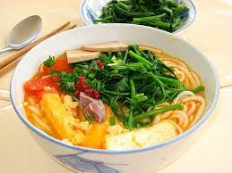
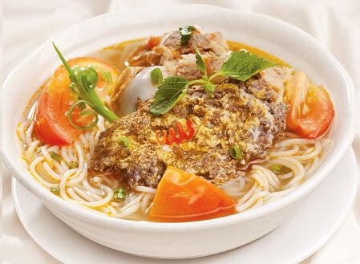

My Favorite Food
Crab Noodle Soup
I love crab noodle soup! This is a Vietnamese dish called canh bun. It is a type of pho. Crab noodle soup has crab, tomatoes, tofu, and boiled water spinach. This dish originated from the North, but now it is very rare because of its difficulty of cooking it. Because of that, there is another dish that is very similar to this. It's translation is literally the same thing, crab noodle soup, but in Vietnamese this dish is called bun rieu. It has the similar ingredient to canh bun, but the noodle size is different and it isn't usually eaten with spinach. In addition, it is a little bit more sour but that's not really noticeable. Although they are very similar, I still LOVE canh bun(crab noodle soup).
| Canh Bun | Bun Rieu |
|  |
 |
Don't they look similar?